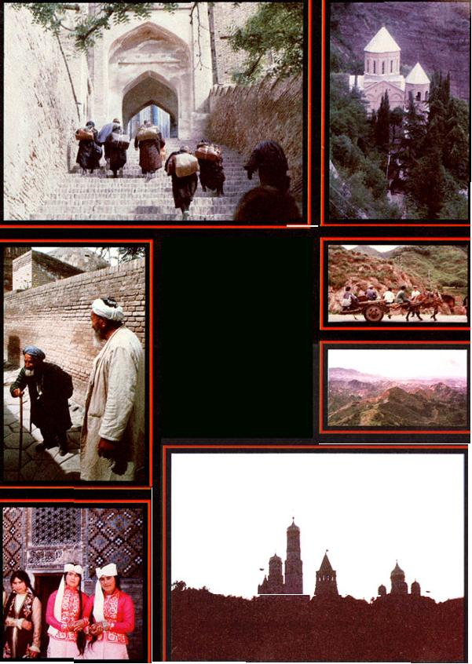

New Knowledge, friendship, and adventures are all yours when you . . .
About the time this magazine was mailed to you, a number of MOTHER's readers returned from our Solar Tour of Israel. Not only do the enthusiastic travelers now know a great deal more about sun-power and its multiple uses than they did before embarking on their journey, but they've also experienced a unique culture . . . made new friends in a nation that was formerly composed of faceless strangers . . . and, undoubtedly, come home with wonderful travel tales as well as exotic souvenirs.
"Travel is - notwithstanding the hassles of canceled flights, missing luggage, culture shock, arid even an occasional bout with homesickness - the greatest education, and the most enjoyable experience, that money can buy," says MOTHER's Tour Director, Sara Pacher. "I always come home with so much to relate that I can't seem to stop telling anyone who will listen all about my latest fantastic journey."
To illustrate the point, Sara described her return from last year's tour to the U.S.S.R.:
SARA'S RUSSIAN REMEMBRANCES
Our plane was late, so I missed my connections back to the North Carolina mountains and had to stay overnight in New York. Despite scrambling, regretful goodbyes and a bad case of jet lag, I was still bursting with excitement about the trip when I climbed into a taxi.
Unfortunately, my cab driver seemed to be the taciturn type, who answered my questions about the then-current gas lines with monosyllables. Undiscouraged, however, I finally blurted out that I was really exhausted after my long flight from Leningrad.
"Leningrad!" he almost shouted, suddenly coming to life. "I'm from Leningrad myself." As luck would have it, then, I had an entranced-and captive-audience all the way into the city.
First, we discussed the relative merits of Leningrad and Moscow-there's a real rivalry between those two cosmopolitan cities-and I agreed with him that the former had the latter beat when it came to museums, restaurants, and the friendliness of the population. But, though I'd loved Leningrad's charming canals and magnificent architecture, I'd also been quite impressed with Moscow's miles of parks and gardenlike streets. And, I asked him, how could I ever forget that sunset boat ride past the towering fairytale turrets of the Kremlin . . . even if I was scolded by the boatmen for resting my toes on the empty seat in front of me!
Then I talked about the trip through the forbidding Caucasus, where herds of woolly sheep engulfed our bus on narrow passes, and where rare yellow azaleas turned the mountains into golden fire.
I told the driver of the terrible beer-sold from kegs on the pretty streets of the old Czarist health spa of Pyatigorsk-that I drank with stocky, ruddy-faced men who kept laughing and repeating, "Amerikana! Amerikana! " . . . of the maids gathered around a hotel TV set who grabbed and kissed me when they heard that Salt II had been signed . . . of the four-hour wedding feast in a small Soviet Georgian village followed by a midnight picnic high in the hills, where we ate shish kebab cooked over an open fire and exchanged American and Georgian campfire songs.
I recalled the giggling, gold-toothed girls of Soviet Central Asia, who wore multiple pigtails and many-colored silk dresses . . . 'and the lively, little old man clothed in a Biblical costume who pinched me and then called, "Spasee-ba! Spasee-ba!" ("Thank you! Thank you! "). And I recounted tales of drinking dark coffee with ice cream on the balmy, flower-scented seaside promenade in Sukhumi . . . speaking with construction workers who'd never met any Westerners before and were amazed at how likable we were.
"Our government doesn't want us to get to know you . . . and that's wrong! It's just wrong!" the men concluded angrily . . . and we knew that these folks would probably start to question other things they were told!
I also mentioned to the driver how wonderful it felt to be so slender, compared to those husky Russian women we shared the beach with on the clear, buoyant Black Sea.
"Ah, the wonderful Black Sea!" the cabbie sighed. "I used to spend my month's vacation there every year. "
As we crossed the Triborough Bridge in heavy, maddening traffic, I thought of the many famous Russian exiles who never seemed to lose their nostalgia for their homeland.
"Do you like it here? " I asked.
He shrugged a typical New York cab driver's shrug. "Yes, but-you know-it's hard sometimes. "
"Do you miss the U.S.S.R. ?"
"I didn't like the police-they can be petty and annoying-and I'm Jewish, so I wanted to leave. But yes I miss it very much. "
We had pulled up to my hotel by then, and-when I reached in my purse to pay the fare-I also pulled out a smooth, white pebble and handed it to him with my money.
"Here . . . it's from the Black Sea. I picked it up just three days ago." His eyes lit up with delight. "I've been to the Soviet Union only two times, " I continued, as we warmly shook hands goodbye, "but I'll miss it, too. I hope we can both return someday. "
THE DOOR'S STILL OPEN
Sara will be returning - from May 18 to June 8, 1980 - and you're invited to go along . . . on MOTHER's Herbs and Wild Plants of the U.S.S.R. Tour. Aside from the places mentioned above, we'll be visiting Alma-Ata, nestled against the snow-capped Tien-Shan Mountains near the China border . . . as well as Siberia's crystal-clear Lake Baikal. While there, we'll search out some of the unusual healing and nourishing plants that flourish in these areas.
Also, through the auspices of the Citizen Exchange Corps (which has arranged successful Soviet people-to-people tours for the past 16 years), we'll meet with herb experts, and - no doubt - have some wonderful and (probably) outrageous adventures.
This see-for-yourself journey is yours for $2,390, including round-trip airfare from New York . . . and a $100 deposit (refundable up to six weeks before departure) will hold your place.
AND THEN THERE'S CHINA
Another educational, exciting expedition that's sure to offer some intriguing insights is MOTHER's Food Production Tour of the People's Republic of China (September 8-29, 1980) .
We'll leave from San Francisco . .. stay overnight in Tokyo . . . and start our China travels with a sightseeing stint in the legendary capital of Beijing (Peking). From there we'll move on to some of the most beautiful and culturally rich cities in the agricultural southern provinces: herb-growing Chengdu, a center of handicrafts that's called "the city of brocade" . . . Kunming, "the city of eternal spring", with pagodas and temples dating from the Han Dynasty . . . Nanning, lush and semitropical, which was founded 1,600 years ago during the Mongol Dynasty . . . and Kwangchow (Canton), an ancient city - on the Pearl River - that's known for its fine restaurants and trade fairs.
Land costs for the tour (all-inclusive in China and including accommodations and breakfasts during our two days in Hong Kong) are $1,950. Airfare is currently $1,191, and on your way back you can stop over in Manila or Seoul-plus Tokyo, Hawaii, and the U.S. West Coast - at no extra airfare charge. China, however, is proving to be a very popular destination - the tour's already half full! - so don't wait to send in your $200 deposit ($50 of which is nonrefundable). Deposits should be made by certified check or money order.
Or, if you haven't quite made up your mind, write to Mother's Tours, P.O. Box 70, Hendersonville, North Carolina 28739 and ask for our brochures.
CLOCKWISE FROM TOP LEFT: Even though the Shah-I-Zinda-a series of mosques and tombs in Soviet Asia - is now a museum, many people (like the ones seen here) still make holy pilgrimages to the spot. The women in this group carried all the possessions, leaving the men unburdened .... Mamadaviti (Father David) Chapel overlooks the friendly city of Tbilisi .... An old cart with modern tires is a proper symbol for China today .... The Great Wall of China is spectacular, and so is the view from the top! . . . The golden domes and spires of the Kremlin, the heart of the Soviet empire, as seen from the Moskva River .... These Soviet Asian girls await their turn to try out for a folk song and dance festival .... Old men in Samarkand here delighted to rneet Americans.
|
 CLOCKWISE FROM TOP LEFT: Even though the Shah-I-Zinda?a series of mosques and tombs in Soviet Asia ? is now a museum, many people (like the ones seen here) still make holy pilgrimages to the spot. The women in this group carried all the possessions, leaving the men unburdened .... Mamadaviti (Father David) Chapel overlooks the friendly city of Tbilisi .... An old cart with modern tires is a proper symbol for China today .... The Great Wall of China is spectacular, and so is the view from the top! . . . The golden domes and spires of the Kremlin, the heart of the Soviet empire, as seen from the Moskva River .... These Soviet Asian girls await their turn to try out for a folk song and dance festival .... Old men in Samarkand here delighted to rneet Americans. |
|
|